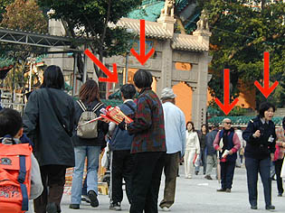
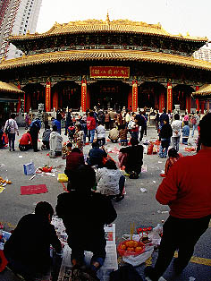
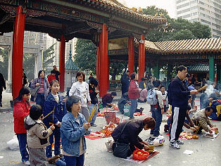
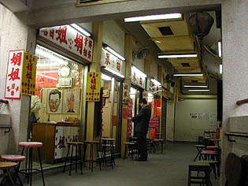
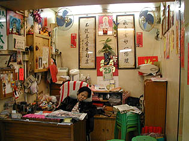
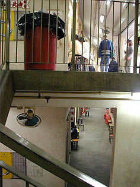
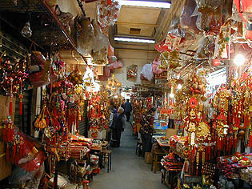
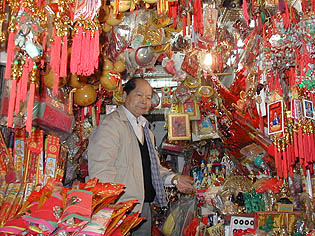
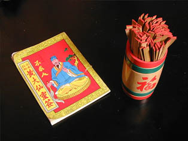

黄大仙廟 WonTaiSin
Temple
地下鉄の駅から出るとすぐに線香をもったオババ達が
「あんた、黄大仙に来たんだろ、だったらこの線香買ってきなよ、あたしの線香はね、ちょっと違うんだよ。今まで何人もの人間を金持ちにしてやったんだ、だからあんたもその辺のインチキな線香なんか買わないであたしの線香を買いな。安くしてやるからさ」
といって（たぶん）今にも火をつけそうな勢いで何人も寄ってくる。

ここは香港の中心街からも近い黄大仙廟。
占いが大好きな香港の人の中でも人気髄一の（多分）占いスポットだ。つまり良く当たるのだろう。
聞けば日本の旅行者も通訳まで付けてここにくるらしい。げに恐ろしきは信じる力なり、これ一種の宗教なり。
さて、占いに興味のない私だが香港の人がかなり気合い入れて拝んでるらしいのでそっちの気合いの方が気になって行ってみることにした。

おおおおお、やっております。皆さん何をお願いしているのか、血管浮き出まくってます。相当気合いが入っております。

境内、特に大雄寳殿の前では地ベタに新聞紙を敷き、そこに各種お供物をセッティングし、一生懸命、ホントに一生懸命祈っているのだ。
お供物も大抵は果物やお菓子程度だが、中には絞めた鶏などのレア系のお供物やおせち料理かよ、という位のゴージャス供物を持って来ているホントに気合いの入っている人もいる。
こんなに気合いが入っているからには相当のお願いごとがあるのだろう。
先ほどからガヂヤガヂャとやかましい。みれば皆さん、筮竹（ぜいちく）を上下にシェイクしている。
ここでの占いシステムはこのお願い事を念じながらシェイクして飛び出した筮竹の番号を持ってお好みの占い師のところに行ってお伺いをたてるというもの。
その占い師というのがここ黄大仙には180件もあるのだ。
案内図を見ると大雄寳殿の前にバームクーヘンを5人で分けたような建物があり、そこにズラリと占い師が並んでいる。

中には英語可のところもある。どこも結構暇そう。

占い師さん、開店休業爆睡中。
この占い長家は二階建てで、それでも二階の方がまだ人がいる感じ。一階に行くと占い番外地みたいな雰囲気が漂っていた。
一階↓  ↑二階
また、この建物の表通りに面した一画には開運グッズ屋が並んでいた。
 
こちらも比較的閑散としていたが、店先は赤金赤金赤金赤金赤金赤金赤金赤金であふれかえっていてビジュアル的には賑やかだった。黄大仙グッズをはじめ、お守り、線香、その他の開運グッズが目白押しだ。
というわけで素敵なおじさん（写真）のところでついつい購入してしまった占いセット。
2点で600円位だったと思います。

本の内容はオール中文、しかも古文調。
ページの初めに吉とか凶とか書いてあるのでそれを見るくらいしか今のところ使い道はない。トホホ‥
次へ行きましょう 香港珍寺遊戯に戻る 珍寺大道場に戻る